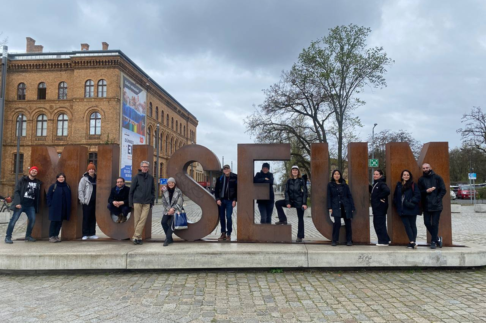
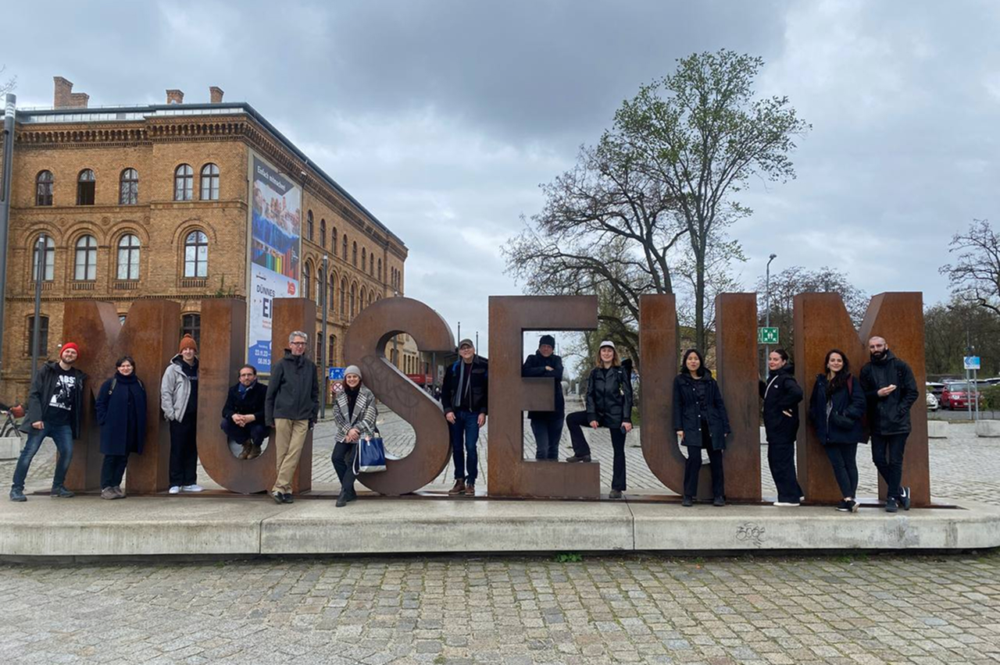

About TM
Type and Media is a one year master’s programme in type design at the Royal Academy of Arts in The Hague. During the first semester, the students have several ongoing modules with concurrent projects, interspersed with a diverse set of workshops. During the second semester, each student focuses on a single project. This website showcases the final projects of the class of 2024.
Special thanks to the faculty and supervisors at Type and Media for their expertise, wisdom, and support: Erik van Blokland, Marja van der Burgh, Paul van der Laan, Peter Verheul, Françoise Berserik, Peter Biľak, Petr van Blokland, Céline Hurka, Just van Rossum, Fred Smeijers, Paul Barnes, Sanne Beeren, Frank Grießhammer, Minjoo Ham, Ilya Ruderman, Aleksandra Samuļenkova, Kristyan Sarkis
For every talk and lecture: Jill Pichota, David Jonathan Ross, and Joyce Ketterrer of Darden Studio, Paul Barnes of Commercial Type, Arthur Reinders-Folmer, Maurice Meilleur. Thanks to the KABK workshops, facilities, and staff, and to Gallery West & Alphabetum for having us, also.
TM2324 is Felix Bamforth, Anne-Dauphine Borione, Hanna Boslau, Cecilia del Castillo Daza, Nina Faulhaber, Pauline Fourest, Max Holl, Fabio Pop, Ben Rouzaud, Mihael Šandro, Betsy Schuster, Zhenya Spizhovyi & Mint Tantisuwanna.
 
